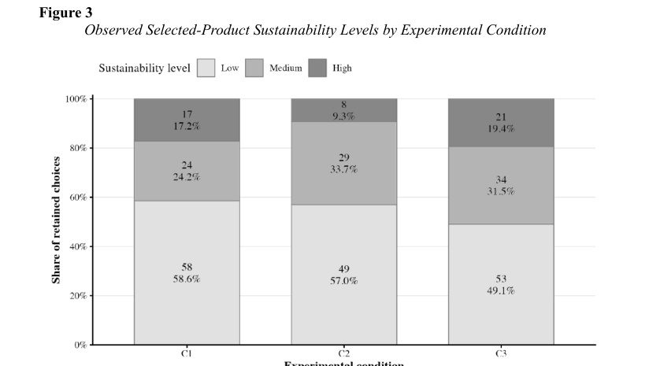
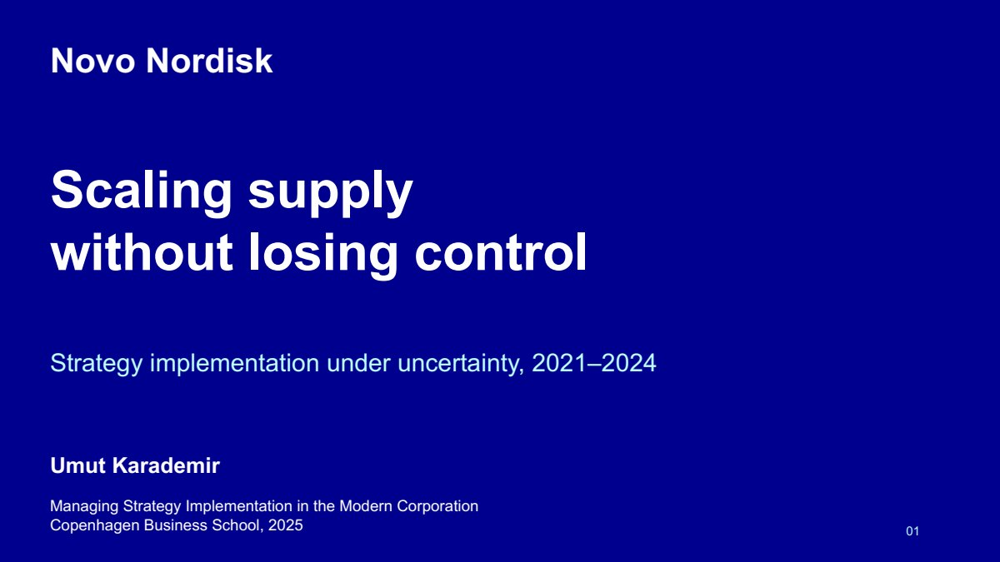

Product development
GreenChoice.AI
I co-develop the shopping assistant and its website, using analytics and early user testing to guide improvements.
Research · Communication · Digital product development
I use interviews, experiments and product data to improve digital experiences and explain what teams should do next.
Product development
I co-develop the shopping assistant and its website, using analytics and early user testing to guide improvements.

Experimental research
I built a shopping assistant and tested how three explanations shaped what people noticed and chose.

Customer experience
I analysed customer reviews and used the findings to propose two improvements to the Surprise Bag experience.
Research and product work
A shopping chatbot concept that helps people compare products using environmental and social evidence linked to its sources.
I co-develop the chatbot and website with Dr. Frans van der Sluis. My work covers deployment, analytics and formative user testing. I also helped revise the funding proposal and delivered the pitch to the UCPH Lighthouse committee.
DKK 150,000 in UCPH Lighthouse proof-of-concept funding.
Research supporting a digital collaboration platform for students, academics and companies. Working with project lead Peren Özturan, I supported recruitment, interviews, transcription and participant follow-up, analysed research material and presented findings to inform platform development.
The project received a DKK 50,000 CSE Discovery Grant.
Comparing Sustainability Communication Strategies in AI Shopping Conversations
I designed a mixed-method study comparing three ways of communicating sustainability in AI shopping conversations. The work combined experimental design, conversational materials and quantitative and qualitative analysis. The study found no significant overall difference between conditions.
From Retrieval to Responsible Choice: Auditing AI Assistants for Responsible Product Search
An examination of how AI assistants retrieve information, explain evidence and support responsible alternatives in shopping scenarios.
Business research case studies
Complete visual presentations with the research approach, evidence and recommendations. Read online or download the PDF and editable slides.
Customer experience audit
Customer reviews reveal where the Surprise Bag experience falls short. Journey mapping and PERFA coding connect the findings to two proposed service concepts.
Read the case and presentation
Employer branding and inclusion
A qualitative study of how corporate identity, global career pathways and everyday belonging shape the employer story. The findings inform a proposed change programme.
Read the case and presentation
Strategy implementation
An analysis of how authority, information and operating routines shape expansion under uncertainty. Public evidence informs a practical decision and review framework.
Read the case and presentationBackground
University of Copenhagen
Research & Product Developer
Copenhagen Business School
Marketing Student Assistant
Novo Nordisk
Communications & Change Management Intern
Stakeholder communication, monthly change newsletters, rollout and cutover planning, data validation and process impact analysis.
TNC Group / SCA Social
Project Management Intern
Bilkent University
Social Psychology Lab and Developmental Psychology Lab
Recruitment, study materials, pilot testing, experimental data collection, transcription and data preparation.
Python tutor, CS125
Introduction to Data Analysis for Social Sciences. Python, NumPy, pandas and Matplotlib.
MA Cognition and Communication, University of Copenhagen
BA Psychology, Bilkent University
Master’s electives, Copenhagen Business School
Exchange semester, University of Konstanz
Get in touch
I’m interested in marketing, communications and project coordination roles where research helps shape decisions and experiences.